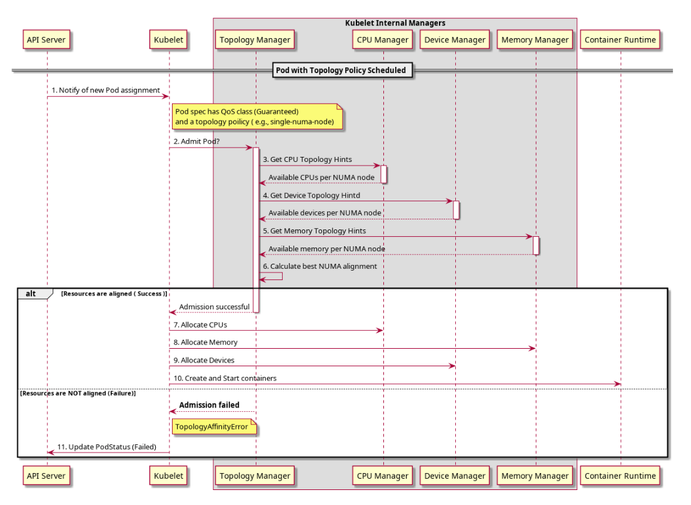

Feature state:
Stable since Kubernetes v1.27
An increasing number of systems leverage a combination of CPUs and hardware accelerators to support latency-critical execution and high-throughput parallel computation. These include workloads in fields such as telecommunications, scientific computing, machine learning, financial services and data analytics. Such hybrid systems comprise a high performance environment.
In order to extract the best performance, optimizations related to CPU isolation, memory and device locality are required. However, in Kubernetes, these optimizations are handled by a disjoint set of components.
Topology Manager is a kubelet component that aims to coordinate the set of components that are responsible for these optimizations.
Before you begin
You need to have a Kubernetes cluster, and the kubectl command-line tool must be configured to communicate with your cluster. It is recommended to run this tutorial on a cluster with at least two nodes that are not acting as control plane hosts. If you do not already have a cluster, you can create one by using minikube or you can use one of these Kubernetes playgrounds:
- iximiuz Labs
- Killercoda
- KodeKloud
Your Kubernetes server must be at or later than version v1.18. To check
the version, enter
kubectl version.
How topology manager works
Prior to the introduction of Topology Manager, the CPU and Device Manager in Kubernetes make resource allocation decisions independently of each other. This can result in undesirable allocations on multiple-socketed systems, and performance/latency sensitive applications will suffer due to these undesirable allocations. Undesirable in this case meaning, for example, CPUs and devices being allocated from different NUMA Nodes, thus incurring additional latency.
The Topology Manager is a kubelet component, which acts as a source of truth so that other kubelet components can make topology aligned resource allocation choices.
The Topology Manager provides an interface for components, called Hint Providers, to send and receive topology information. The Topology Manager has a set of node level policies which are explained below.
The Topology Manager receives topology information from the Hint Providers as a bitmask denoting NUMA Nodes available and a preferred allocation indication. The Topology Manager policies perform a set of operations on the hints provided and converge on the hint determined by the policy to give the optimal result. If an undesirable hint is stored, the preferred field for the hint will be set to false. In the current policies preferred is the narrowest preferred mask. The selected hint is stored as part of the Topology Manager. Depending on the policy configured, the pod can be accepted or rejected from the node based on the selected hint. The hint is then stored in the Topology Manager for use by the Hint Providers when making the resource allocation decisions.
The flow can be seen in the following diagram.

Windows Support
Feature state:
Alpha since Kubernetes v1.32; disabled by default
(WindowsCPUAndMemoryAffinity)
The Topology Manager support can be enabled on Windows by using the
WindowsCPUAndMemoryAffinity feature gate and it requires
support in the container runtime.
Topology manager scopes and policies
The Topology Manager currently:
- aligns Pods of all QoS classes.
- aligns the requested resources that Hint Provider provides topology hints for.
If these conditions are met, the Topology Manager will align the requested resources.
In order to customize how this alignment is carried out, the Topology
Manager provides two distinct options: scope and
policy.
The scope defines the granularity at which you would
like resource alignment to be performed, for example, at the
pod or container level. And the
policy defines the actual policy used to carry out the
alignment, for example, best-effort,
restricted, and single-numa-node. Details on
the various scopes and policies available
today can be found below.
Note:
To align CPU resources with other requested resources in a Pod spec, the CPU Manager should be enabled and proper CPU Manager policy should be configured on a Node. See Control CPU Management Policies on the Node.
Note:
To align memory (and hugepages) resources with other requested resources in a Pod spec, the Memory Manager should be enabled and proper Memory Manager policy should be configured on a Node. Refer to Memory Manager documentation.
Topology manager scopes
The Topology Manager can deal with the alignment of resources in a couple of distinct scopes:
container(default)pod
Either option can be selected at a time of the kubelet startup, by
setting the topologyManagerScope in the kubelet
configuration file.
container scope
The container scope is used by default. You can also
explicitly set the topologyManagerScope to
container in the kubelet
configuration file.
Within this scope, the Topology Manager performs a number of sequential resource alignments, i.e., for each container (in a pod) a separate alignment is computed. In other words, there is no notion of grouping the containers to a specific set of NUMA nodes, for this particular scope. In effect, the Topology Manager performs an arbitrary alignment of individual containers to NUMA nodes.
The notion of grouping the containers was endorsed and implemented on
purpose in the following scope, for example the pod
scope.
pod scope
To select the pod scope, set
topologyManagerScope in the kubelet
configuration file to pod.
This scope allows for grouping all containers in a pod to a common set of NUMA nodes. That is, the Topology Manager treats a pod as a whole and attempts to allocate the entire pod (all containers) to either a single NUMA node or a common set of NUMA nodes. The following examples illustrate the alignments produced by the Topology Manager on different occasions:
- all containers can be and are allocated to a single NUMA node;
- all containers can be and are allocated to a shared set of NUMA nodes.
The total amount of particular resource demanded for the entire pod is calculated according to effective requests/limits formula, and thus, this total value is equal to the maximum of:
- the sum of all app container requests,
- the maximum of init container requests,
for a resource.
Using the pod scope in tandem with
single-numa-node Topology Manager policy is specifically
valuable for workloads that are latency sensitive or for high-throughput
applications that perform IPC. By combining both options, you are able
to place all containers in a pod onto a single NUMA node; hence, the
inter-NUMA communication overhead can be eliminated for that pod.
In the case of single-numa-node policy, a pod is
accepted only if a suitable set of NUMA nodes is present among possible
allocations. Reconsider the example above:
- a set containing only a single NUMA node - it leads to pod being admitted,
- whereas a set containing more NUMA nodes - it results in pod rejection (because instead of one NUMA node, two or more NUMA nodes are required to satisfy the allocation).
To recap, the Topology Manager first computes a set of NUMA nodes and then tests it against the Topology Manager policy, which either leads to the rejection or admission of the pod.
Topology manager policies
The Topology Manager supports four allocation policies. You can set a
policy via a kubelet flag, --topology-manager-policy. There
are four supported policies:
none(default)best-effortrestrictedsingle-numa-node
Note:
If the Topology Manager is configured with the pod scope, the container, which is considered by the policy, is reflecting requirements of the entire pod, and thus each container from the pod will result with the same topology alignment decision.
none policy
This is the default policy and does not perform any topology alignment.
best-effort policy
For each container in a Pod, the kubelet, with
best-effort topology management policy, calls each Hint
Provider to discover their resource availability. Using this
information, the Topology Manager stores the preferred NUMA Node
affinity for that container. If the affinity is not preferred, the
Topology Manager will store this and admit the pod to the node
anyway.
The Hint Providers can then use this information when making the resource allocation decision.
restricted policy
For each container in a Pod, the kubelet, with
restricted topology management policy, calls each Hint
Provider to discover their resource availability. Using this
information, the Topology Manager stores the preferred NUMA Node
affinity for that container. If the affinity is not preferred, the
Topology Manager will reject this pod from the node. This will result in
a pod entering a Terminated state with a pod admission
failure.
Once the pod is in a Terminated state, the Kubernetes
scheduler will not attempt to reschedule the pod. It is
recommended to use a ReplicaSet or Deployment to trigger a redeployment
of the pod. An external control loop could be also implemented to
trigger a redeployment of pods that have the
Topology Affinity error.
If the pod is admitted, the Hint Providers can then use this information when making the resource allocation decision.
single-numa-node
policy
For each container in a Pod, the kubelet, with
single-numa-node topology management policy, calls each
Hint Provider to discover their resource availability. Using this
information, the Topology Manager determines if a single NUMA Node
affinity is possible. If it is, Topology Manager will store this and the
Hint Providers can then use this information when making the
resource allocation decision. If, however, this is not possible then the
Topology Manager will reject the pod from the node. This will result in
a pod in a Terminated state with a pod admission
failure.
Once the pod is in a Terminated state, the Kubernetes
scheduler will not attempt to reschedule the pod. It is
recommended to use a Deployment with replicas to trigger a redeployment
of the Pod. An external control loop could be also implemented to
trigger a redeployment of pods that have the
Topology Affinity error.
Topology manager policy options
Support for the Topology Manager policy options requires
TopologyManagerPolicyOptions feature
gate to be enabled (it is enabled by default).
You can toggle groups of options on and off based upon their maturity level using the following feature gates:
TopologyManagerPolicyBetaOptionsdefault enabled. Enable to show beta-level options.TopologyManagerPolicyAlphaOptionsdefault disabled. Enable to show alpha-level options.
You will still have to enable each option using the
TopologyManagerPolicyOptions kubelet option.
prefer-closest-numa-nodes
The prefer-closest-numa-nodes option is GA since
Kubernetes 1.32. In Kubernetes 1.37 this policy option is visible by
default provided that the TopologyManagerPolicyOptions feature
gate is enabled.
The Topology Manager is not aware by default of NUMA distances, and does not take them into account when making Pod admission decisions. This limitation surfaces in multi-socket, as well as single-socket multi NUMA systems, and can cause significant performance degradation in latency-critical execution and high-throughput applications if the Topology Manager decides to align resources on non-adjacent NUMA nodes.
If you specify the prefer-closest-numa-nodes policy
option, the best-effort and restricted
policies favor sets of NUMA nodes with shorter distance between them
when making admission decisions.
You can enable this option by adding
prefer-closest-numa-nodes=true to the Topology Manager
policy options.
By default (without this option), the Topology Manager aligns resources on either a single NUMA node or, in the case where more than one NUMA node is required, using the minimum number of NUMA nodes.
max-allowable-numa-nodes
The max-allowable-numa-nodes option is GA since
Kubernetes 1.35. In Kubernetes 1.37, this policy option is visible by
default provided that the TopologyManagerPolicyOptions feature
gate is enabled.
The time to admit a pod is tied to the number of NUMA nodes on the physical machine. By default, Kubernetes does not run a kubelet with the Topology Manager enabled, on any (Kubernetes) node where more than 8 NUMA nodes are detected.
Note:
If you select the max-allowable-numa-nodes policy
option, nodes with more than 8 NUMA nodes can be allowed to run with the
Topology Manager enabled. The Kubernetes project only has limited data
on the impact of using the Topology Manager on (Kubernetes) nodes with
more than 8 NUMA nodes. Because of that lack of data, using this policy
option with Kubernetes 1.37 is not recommended and is
at your own risk.
You can enable this option by adding
max-allowable-numa-nodes=<integer> to the
Topology Manager policy options, where the integer value must be greater
than 8. The default is 8, which preserves the existing limit.
Setting a value of max-allowable-numa-nodes does not (in
and of itself) affect the latency of pod admission, but binding a Pod to
a (Kubernetes) node with many NUMA does have an impact. Future,
potential improvements to Kubernetes may improve Pod admission
performance and the high latency that happens as the number of NUMA
nodes increases.
Pod interactions with topology manager policies
Consider the containers in the following Pod manifest:
spec:
containers:
- name: nginx
image: nginxThis pod runs in the BestEffort QoS class because no
resource requests or limits are specified.
spec:
containers:
- name: nginx
image: nginx
resources:
limits:
memory: "200Mi"
requests:
memory: "100Mi"This pod runs in the Burstable QoS class because
requests are less than limits.
If the selected policy is anything other than none, the
Topology Manager would consider these Pod specifications. The Topology
Manager would consult the Hint Providers to get topology hints. In the
case of the static, the CPU Manager policy would return
default topology hint, because these Pods do not explicitly request CPU
resources.
spec:
containers:
- name: nginx
image: nginx
resources:
limits:
memory: "200Mi"
cpu: "2"
example.com/device: "1"
requests:
memory: "200Mi"
cpu: "2"
example.com/device: "1"This pod with integer CPU request runs in the Guaranteed
QoS class because requests are equal to
limits.
spec:
containers:
- name: nginx
image: nginx
resources:
limits:
memory: "200Mi"
cpu: "300m"
example.com/device: "1"
requests:
memory: "200Mi"
cpu: "300m"
example.com/device: "1"This pod with sharing CPU request runs in the Guaranteed
QoS class because requests are equal to
limits.
spec:
containers:
- name: nginx
image: nginx
resources:
limits:
example.com/deviceA: "1"
example.com/deviceB: "1"
requests:
example.com/deviceA: "1"
example.com/deviceB: "1"This pod runs in the BestEffort QoS class because there
are no CPU and memory requests.
The Topology Manager would consider the above pods. The Topology Manager would consult the Hint Providers, which are CPU and Device Manager to get topology hints for the pods.
In the case of the Guaranteed pod with integer CPU
request, the static CPU Manager policy would return
topology hints relating to the exclusive CPU and the Device Manager
would send back hints for the requested device.
In the case of the Guaranteed pod with sharing CPU
request, the static CPU Manager policy would return default
topology hint as there is no exclusive CPU request and the Device
Manager would send back hints for the requested device.
In the above two cases of the Guaranteed pod, the
none CPU Manager policy would return default topology
hint.
In the case of the BestEffort pod, the
static CPU Manager policy would send back the default
topology hint as there is no CPU request and the Device Manager would
send back the hints for each of the requested devices.
Using this information the Topology Manager calculates the optimal hint for the pod and stores this information, which will be used by the Hint Providers when they are making their resource assignments.
Known limitations
The maximum number of NUMA nodes that Topology Manager allows is 8. With more than 8 NUMA nodes, there will be a state explosion when trying to enumerate the possible NUMA affinities and generating their hints. See
max-allowable-numa-nodes(beta) for more options.The scheduler is not topology-aware, so it is possible to be scheduled on a node and then fail on the node due to the Topology Manager.
What's next
- Read about Pod-level resource managers.